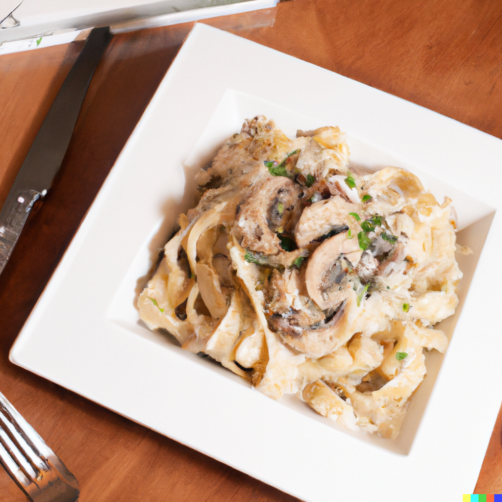

Chicken and Mushroom Fettuccine Alfredo

A creamy and delightful pasta dish
Ingredients
- 8 oz fettuccine
- 2 boneless, skinless chicken breasts
- 1 cup sliced mushrooms
- 2 tbsp butter
- 1 cup heavy cream
- 1 cup grated Parmesan cheese
- Salt and pepper, to taste
- Chopped parsley, for garnish
Steps
- Bring a large pot of salted water to a boil. Cook fettuccine according to the package instructions until al dente. Drain and set aside.
- While the pasta is cooking, season the chicken breasts with salt and pepper. Heat a large skillet over medium heat and cook the chicken until fully cooked through. Remove the chicken from the skillet and set aside.
- In the same skillet, melt the butter and sauté the mushrooms until tender.
- Add the heavy cream to the skillet and bring it to a simmer. Cook for 3-4 minutes, stirring occasionally, until the sauce starts to thicken.
- Stir in the grated Parmesan cheese until fully incorporated and the sauce is smooth.
- Slice the cooked chicken and add it to the skillet along with the cooked fettuccine. Toss everything together until the pasta is well-coated with the sauce.
- Adjust salt and pepper to taste, and serve the dish garnished with chopped parsley.